⌁
Cabeamento estruturado
Instalação e organização de redes lógicas, racks, patch panels e pontos de dados.
- Montagem e organização de racks
- Lançamento de cabos
- Identificação de pontos
Gravataí e Região Metropolitana
Soluções profissionais em redes, fibra óptica, cabeamento estruturado, elétrica básica e CFTV, da instalação à certificação de redes e ao monitoramento por câmeras.
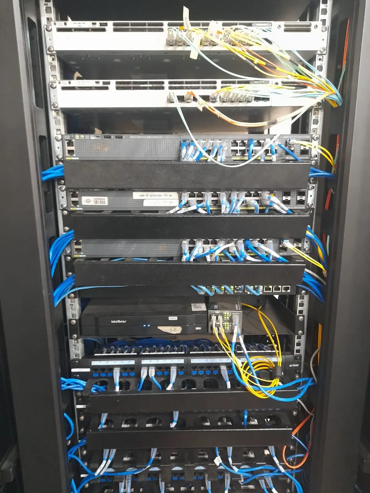
Projeto executadoO que fazemos
Execução técnica com organização, identificação e atenção aos detalhes em cada etapa do serviço.
Instalação e organização de redes lógicas, racks, patch panels e pontos de dados.
Implantação e manutenção de enlaces ópticos para conexões rápidas e confiáveis.
Testes técnicos para validar desempenho, integridade e conformidade do cabeamento.
Instalações e adequações elétricas de baixa complexidade para ambientes comerciais.
Instalação e manutenção de sistemas de câmeras para monitoramento de ambientes comerciais.
Selecione uma solução para ver os serviços realizados.
Serviços realizados
Veja todos os projetos ou filtre pelo tipo de serviço.
As fotos dos serviços de CFTV ainda não foram adicionadas. Fale com o Paulo para planejar seu sistema de câmeras.
Solicitar orçamento de CFTV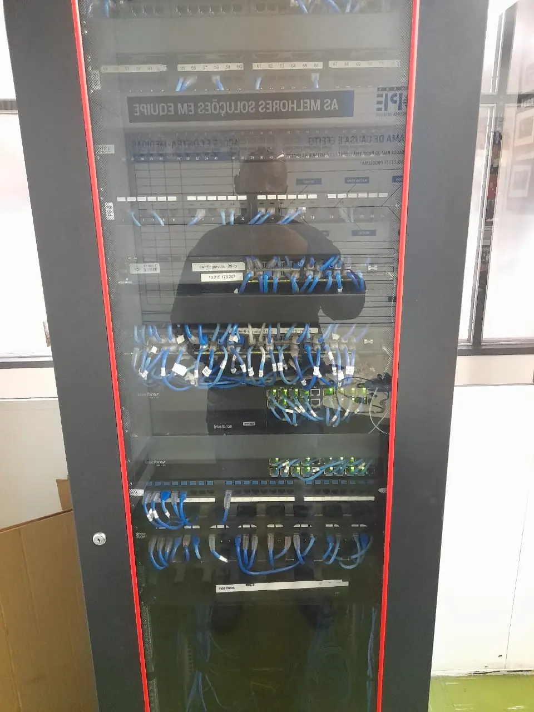
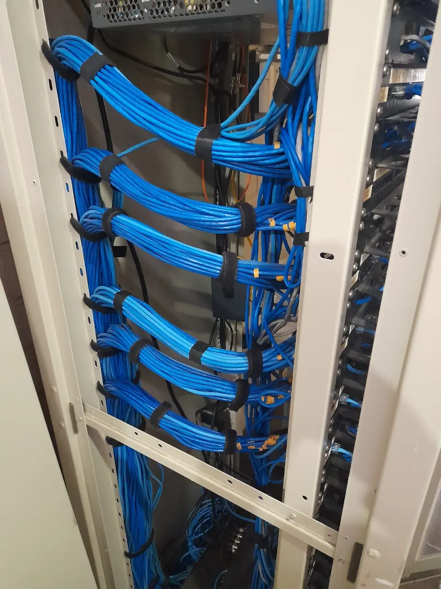
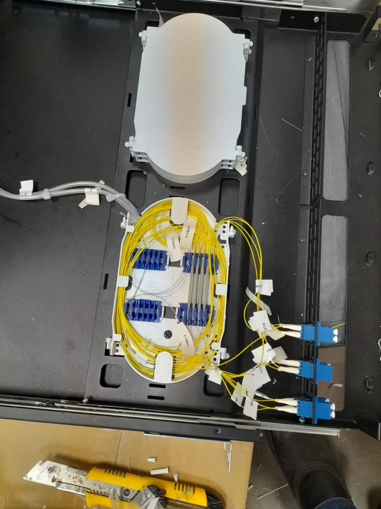
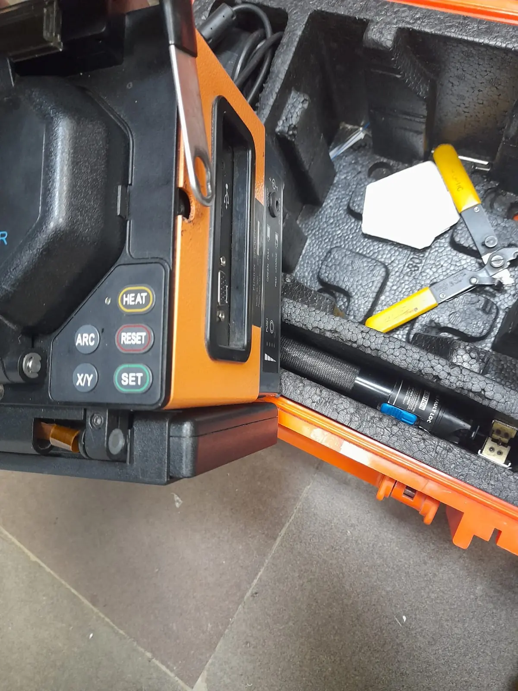
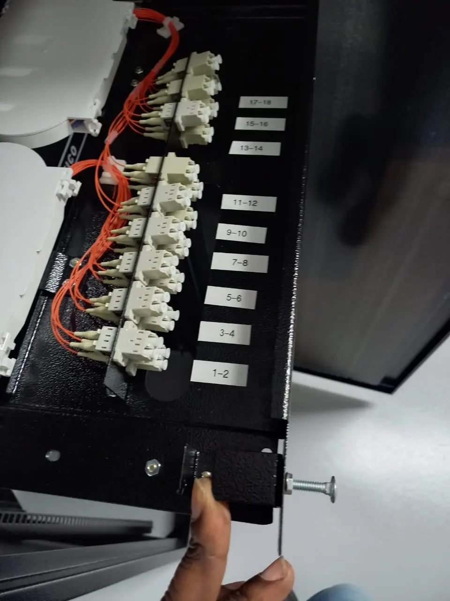
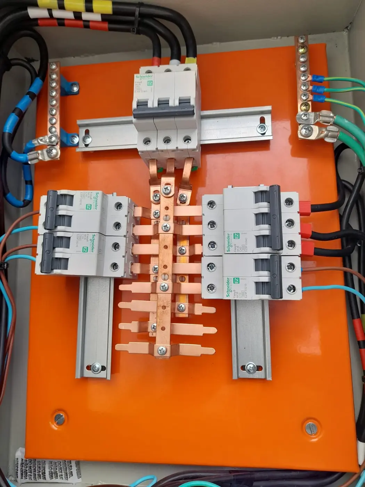
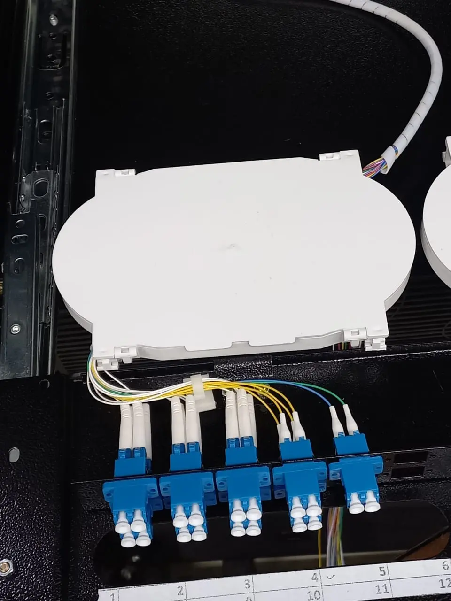
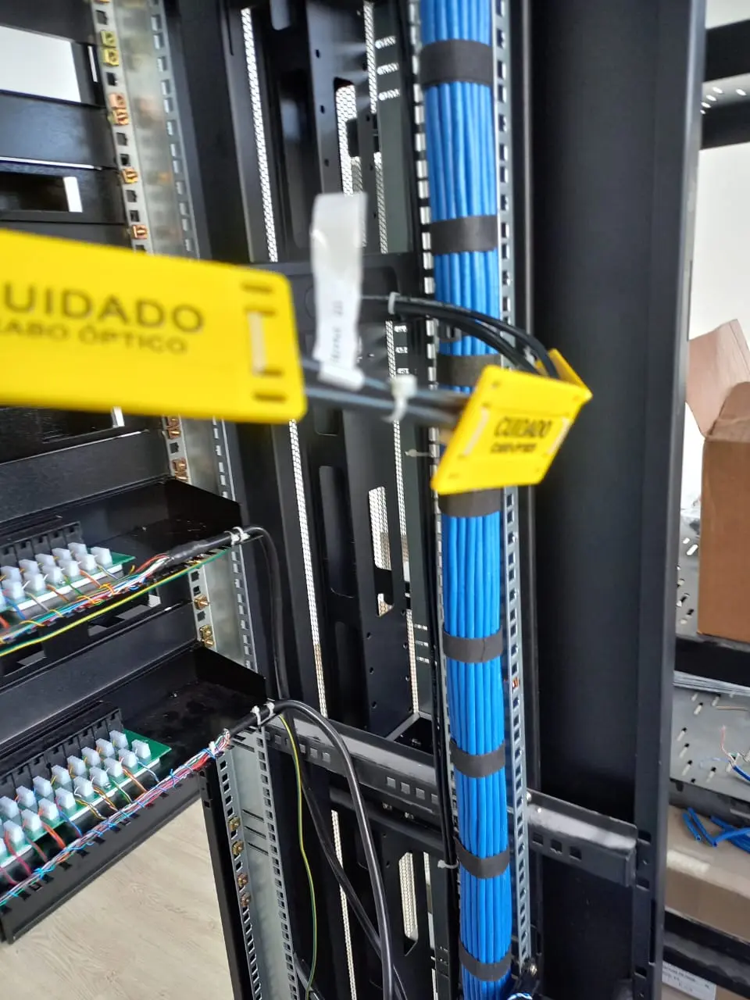
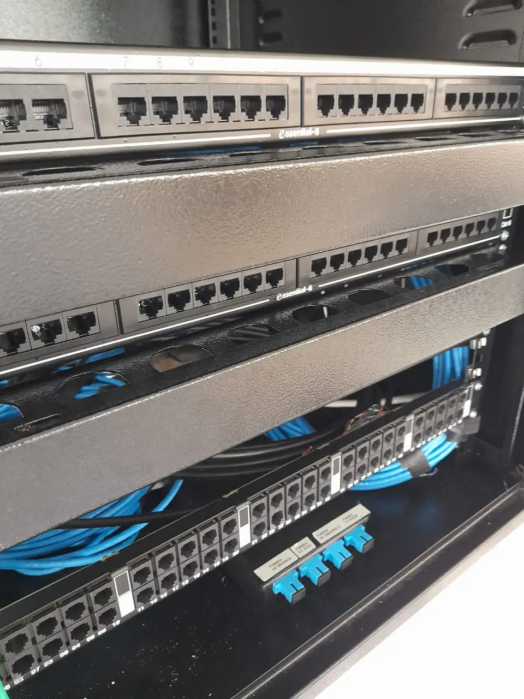
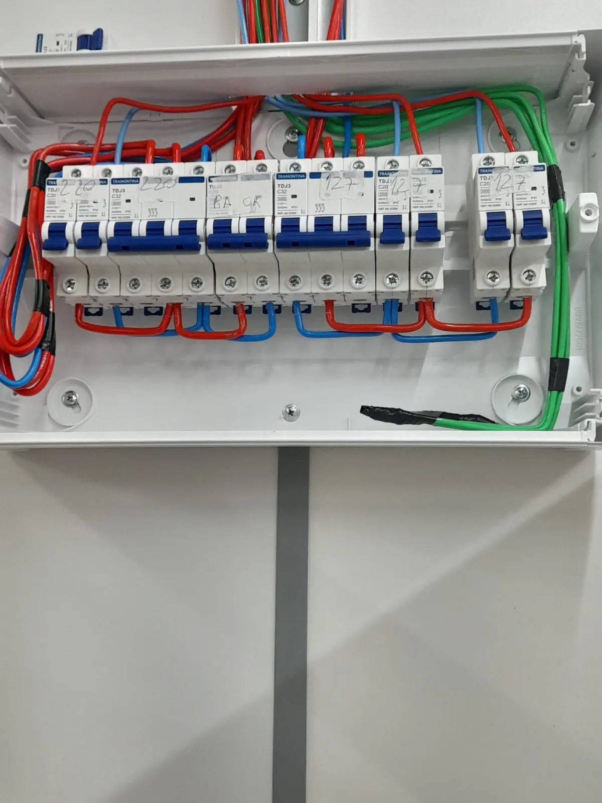
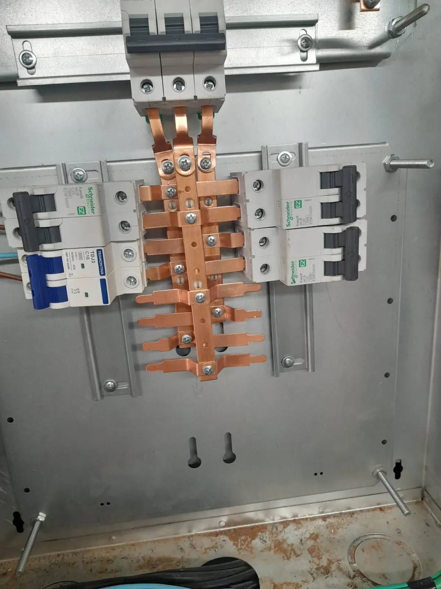
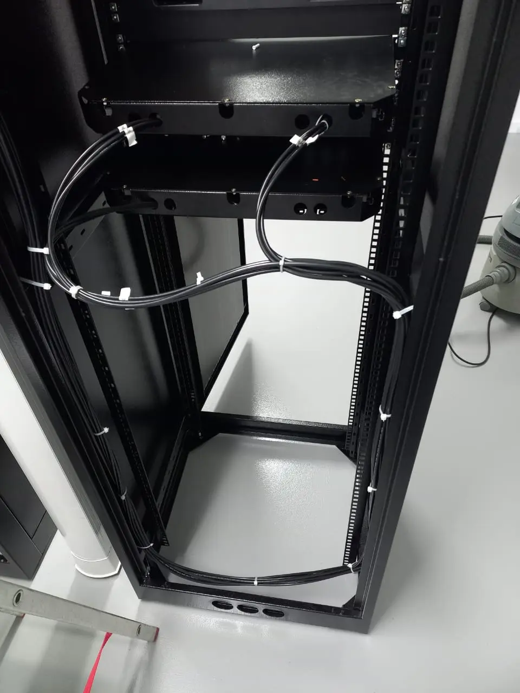
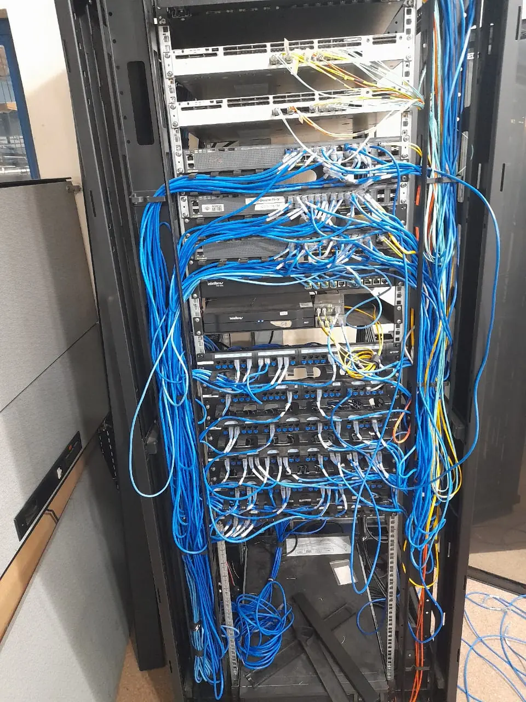
AntesDepois↔ Arraste para comparar o antes e depois
Organização e confiança
Paulo atua à frente da Vision Telecom com foco em execução bem-feita, comunicação clara e soluções adequadas à realidade de cada cliente.
Precisa melhorar sua infraestrutura?